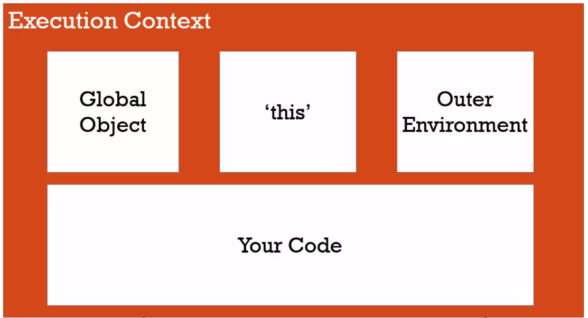
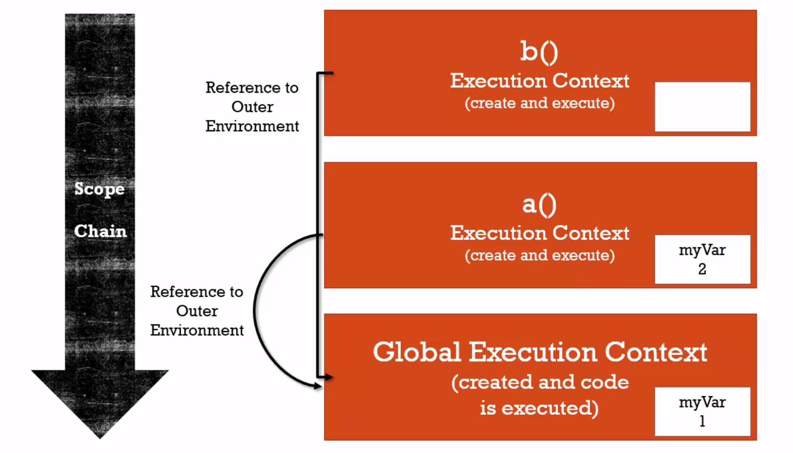

JavaScript¶
Vanilla JS¶
Arrays¶
unshift(x)¶
Adds a new item to the beginning of the array and returns the new array length
push(x)¶
Adds a new item to the end of the array and returns the new array length
join()¶
Returns all elements in an array as a single string
var fruits = ["Banana", "Orange", "Apple", "Mango"];
var energy = fruits.join();
// energy == "Banana,Orange,Apple,Mango"
The elements will be seperated by a specified seperator. By default this is a comma
every()¶
Tests whether all elements of an array pass the test implemented by the provided function. Returns boolean
const isBelowThreshold = (currentValue) => currentValue < 40;
const array1 = [1, 30, 39, 29, 10, 13];
console.log(array1.every(isBelowThreshold));
// expected output: true
The elements will be seperated by a specified seperator. By default this is a comma
Strings¶
split(“”)¶
Split a string into an array based on each occurance of the passed parameter
- Ex. “” would split each single char into its own index in the array
parseInt(“40”)¶
Parse a string and returns an integer
parseInt("40") // 40
parseInt("40 20 34") //40
parseInt("3.5") //3
parseInt("3.7") //3
parseInt("40 years") //40
parseInt("He is 40 years") //NaN
concat(str)¶
Concats strings together
let newStr = str1.concat(str2)
let newStr = str1.concat(str2, str3, strn)
ES6+ (ECMAScript 6)¶
Execution Contexts and Lexical Environments¶
Syntax Parser¶
A program that reads your code and determines what it does and if its grammar (or syntax) is valid. Your code isn’t magic. Someone else wrote a program to translate it for the computer (compiler).
Lexical Environment¶
Where something wits physically in the code your write. ‘Lexical’ means ‘having to do with words or grammar’. A lexical environment exits in programming languages in which where you write something is important.
Execution Context¶
A wrapper to help manage the code that is running. There are lots of lexical environments. Which one is currently running is managed via execution contexts. It can contain things beyond what you’ve written in your code.
{kind=link}
Creation & Hoisting¶
Execution Context is created in two phases:
- Creation Phase
Global Object
‘this’
Outer Environment
Setup Memory Space for Variables (undefined) and Functions - “Hoisting”
- A function and all its code is stored in memory
- A variable is stored in memory, however the value is unknown and will be set to undefined
Single Threaded & Synchronous¶
- Single Threaded:
- One command at a time.
- Under the hood of the browser, maybe not…
- Synchronous:
- One (line of code) at a time. And in order.
Asynchronous¶
More than one at a time. Some code intializes other code to run at the same time. Javascript is synchronous, so we need special implementation to handle this. An event queue is created that stores notification of events that are happening. For example, Click. We can have an event listener to react to these accordingly. This event queue gets looked at once the execution stack is empty, and then creates the execution context to react to the item in the event queue (ex. handleClick()).
Invocation¶
Running a function. In JS, by using parenthesis ()
Object¶
A collection of name value pairs (The simplest definition when talking about Javascript).
Address: {
Street: 'Main',
Number: 100,
Apartment: {
Floor: 3,
Number: 301
}
}
Variable Environment¶
Where the variables live and how they relate to each other in memory. Variables declared within a function live within the execution context of that function.
The Scope Chain¶
Each execution context has a reference to an Outer Environment. This outer environment is a reference to the Global Execution Context. This means that a function can reference a variable if it is declared in the Global Execution Context, and not in its own execution context.
{kind=link}
However, if we have a function that is nested inside of another function, the outer reference then becomes the parent function of which it sits inside.
Scope¶
Where a varibale is available in your code. And, if it’s truly the same variable, or a new copy.
React¶
ComponentLifeCycle¶
In order from first to last:
- componentWillMount
- Immediately before initial rendering
- componentDidMount
- Immediately after initial rendering
- componentWillRecieveProps
- When component recieved new props (ex. new props due to parent state change)
- shouldComponentUpdate
- Before rendering, after recieving new props or state. Can return false to prevent rerendering
- componentWillUpdate
- Before rendering, after receiving new props or state
- componentDidUpdate
- After component’s update are flushed to DOM
- componentWillUnMount
- Immediately before removing component from DOM
Error Boundaries¶
Runtime errors during rendering will break the app, we can prevent this using error boundaries. Consists of two lifecycle methods:
static getDerivedStateFromError(error)
- Used to render a fallback UI after an error is thrown
- Can set error state to true and conditionally render a specific UI
componentDidCatch(error, info)
- Used to log the error and information
Create an ErrorBoundary component which has the two lifecycle methods above. You can then wrap any component in this ErrorBoundary component if you wish to enable the error boundaries for it.
Redux State Management¶
A popular state management library that keeps all state information in a central location called a ‘store’. Redux models the applications state as a single JS Object
Action
- A POJO that must have a key called ‘type’ and a string value
- Can have any number of additional keys
Reducer
- A function that accepts the state and an action and returns a new state
Store
- One bug POJO that represents the entire state of the application